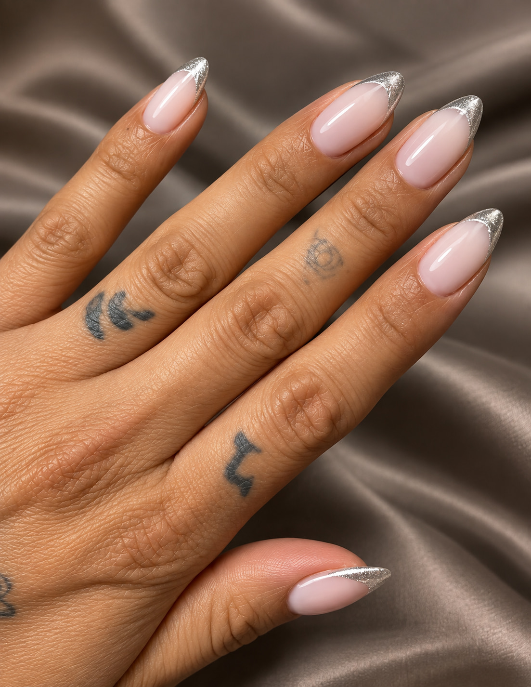
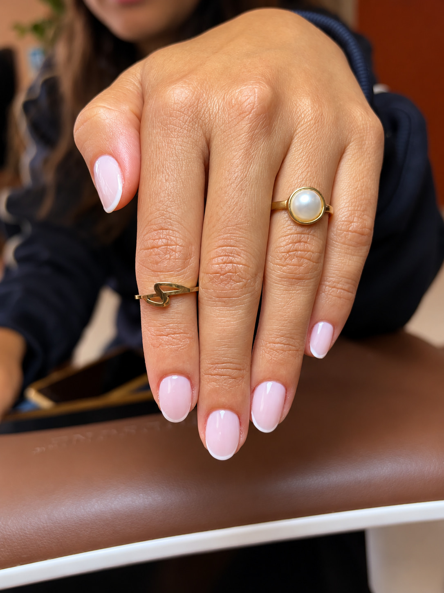
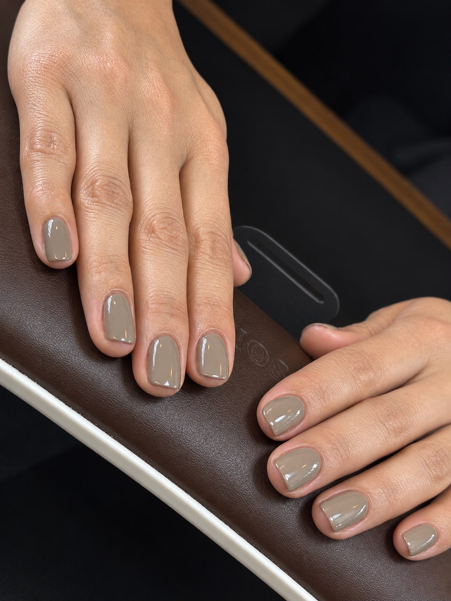
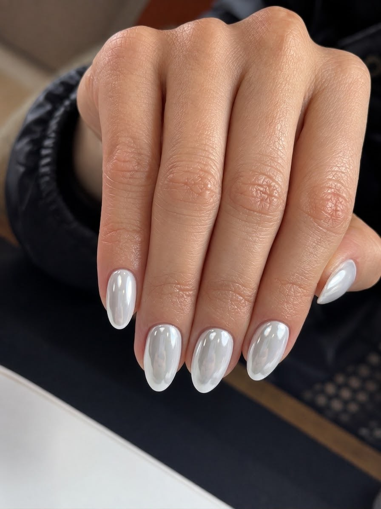
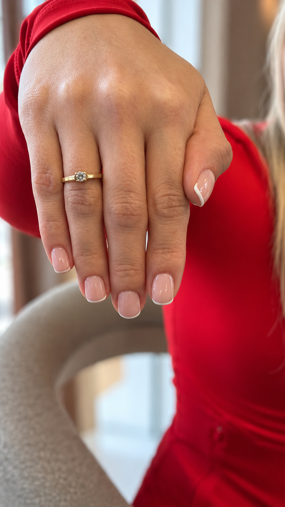
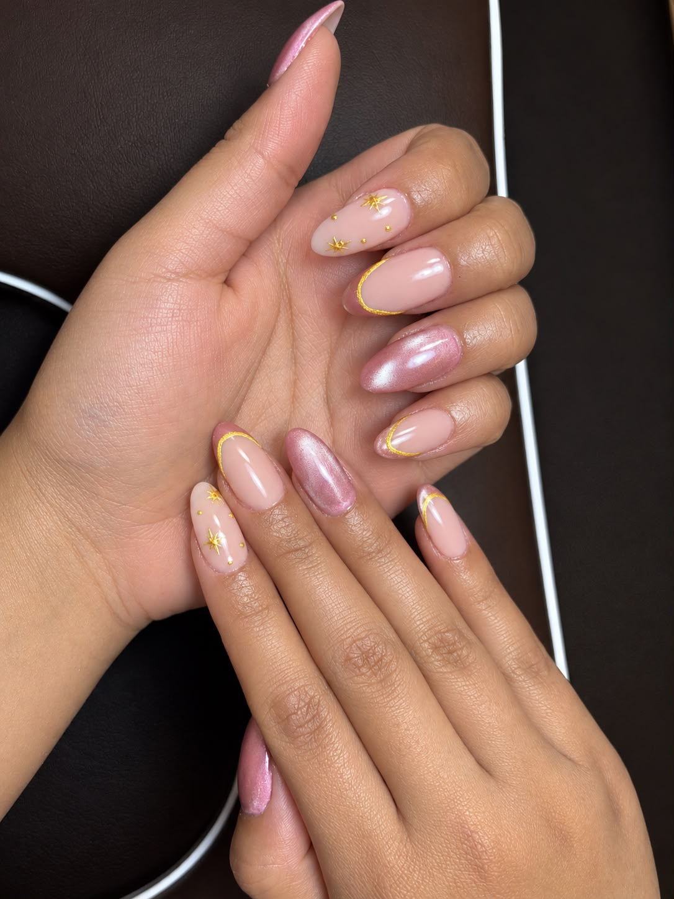

Seis tonos que no necesitan levantar la voz.

Un brillo que cambia con la luz.
El clásico, con un filo de luz.

Limpio, para todos los días.
Suave, como un domingo sin alarma.

Un hilo dorado, y ya.
El neutro que combina hasta con los lunes.
Reserva tu momento · WhatsApp 311 566 2051
Nude con oro.
Responde aquí abajo